01Dales mappe
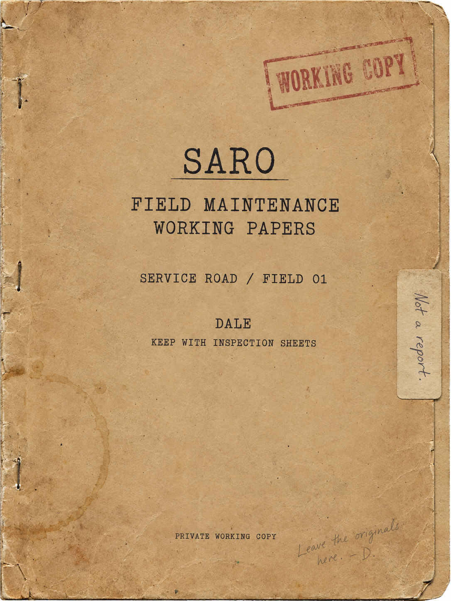
SARO / Field maintenance / Working papers
Nytt originalt produksjonsomslag til Dales feltmappe, uten nye kanonbevis.
Les dokumentteksten
SARO
FIELD MAINTENANCE
WORKING PAPERS
SERVICE ROAD / FIELD 01
DALE
KEEP WITH INSPECTION SHEETS
PRIVATE WORKING COPY
Not a report.
Leave the originals here. - D.
WORKING COPY
02Skift og feltarbeid
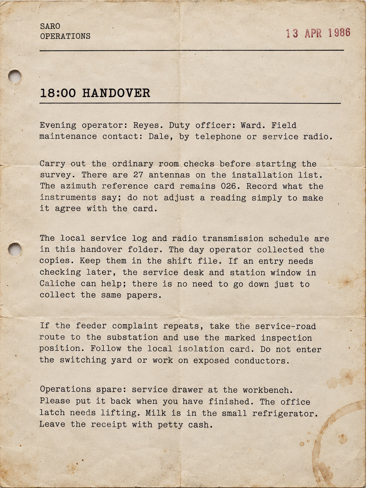
Evening handover / Sunday, April 13
Ordinært overleveringsark fra mappen på SARO ved kveldsskiftets start.
Les dokumentteksten
18:00 HANDOVER
Evening operator: Reyes. Duty officer: Ward. Field maintenance contact: Dale, by telephone or service radio.
Carry out the ordinary room checks before starting the survey. There are 27 antennas on the installation list. The azimuth reference card remains 026. Record what the instruments say; do not adjust a reading simply to make it agree with the card.
The local service log and radio transmission schedule are in this handover folder. The day operator collected the copies. Keep them in the shift file. If an entry needs checking later, the service desk and station window in Caliche can help; there is no need to go down just to collect the same papers.
If the feeder complaint repeats, take the service-road route to the substation and use the marked inspection position. Follow the local isolation card. Do not enter the switching yard or work on exposed conductors.
Operations spare: service drawer at the workbench. Please put it back when you have finished. The office latch needs lifting. Milk is in the small refrigerator. Leave the receipt with petty cash.
03Skift og feltarbeid
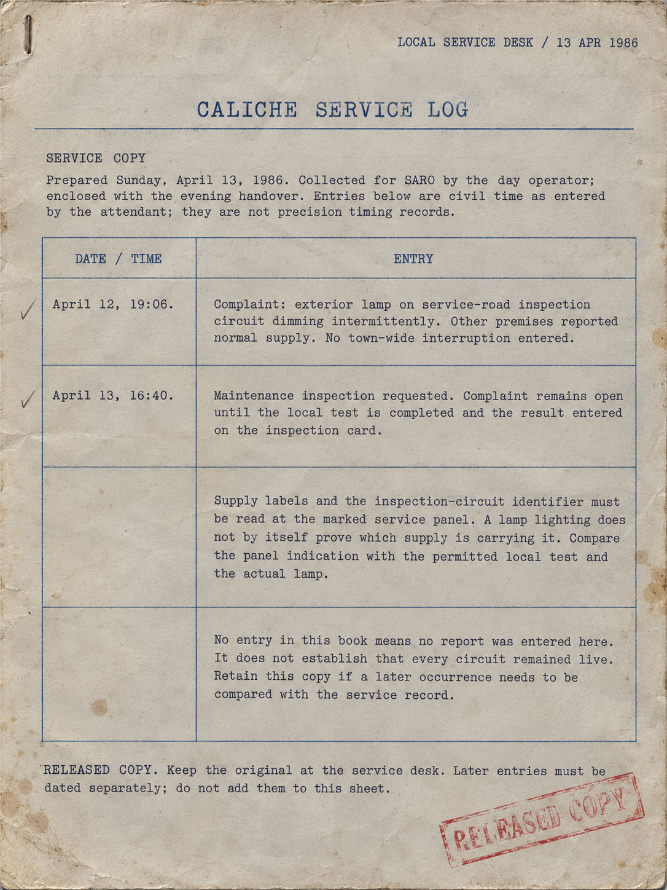
Caliche service log / released copy
Datert frigitt journalkopi i overleveringsmappen; bakgrunn for T01/T02.
Les dokumentteksten
SERVICE COPY
Prepared Sunday, April 13, 1986. Collected for SARO by the day operator; enclosed with the evening handover. Entries below are civil time as entered by the attendant; they are not precision timing records.
April 12, 19:06. Complaint: exterior lamp on service-road inspection circuit dimming intermittently. Other premises reported normal supply. No town-wide interruption entered.
April 13, 16:40. Maintenance inspection requested. Complaint remains open until the local test is completed and the result entered on the inspection card.
Supply labels and the inspection-circuit identifier must be read at the marked service panel. A lamp lighting does not by itself prove which supply is carrying it. Compare the panel indication with the permitted local test and the actual lamp.
No entry in this book means no report was entered here. It does not establish that every circuit remained live. Retain this copy if a later occurrence needs to be compared with the service record.
RELEASED COPY. Keep the original at the service desk. Later entries must be dated separately; do not add them to this sheet.
04Skift og feltarbeid
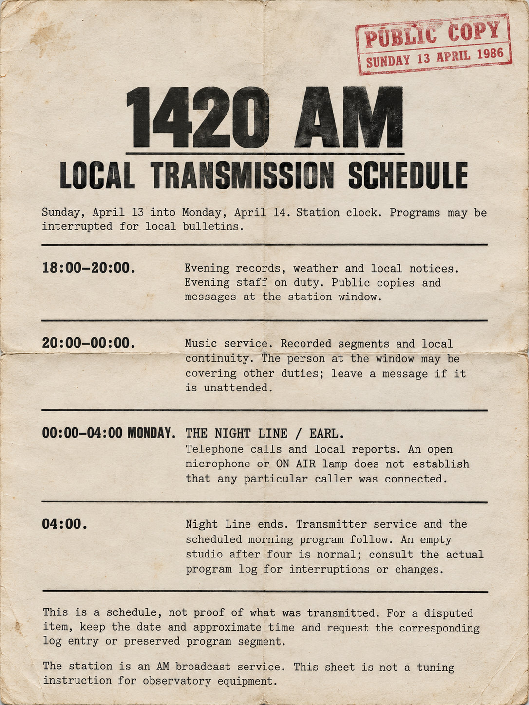
1420 AM / transmission schedule
Ordinær offentlig sendeskjemakopi vedlagt overleveringen.
Les dokumentteksten
1420 AM / LOCAL TRANSMISSION SCHEDULE
Sunday, April 13 into Monday, April 14. Station clock. Programs may be interrupted for local bulletins.
18:00–20:00. Evening records, weather and local notices. Evening staff on duty. Public copies and messages at the station window.
20:00–00:00. Music service. Recorded segments and local continuity. The person at the window may be covering other duties; leave a message if it is unattended.
00:00–04:00 MONDAY. THE NIGHT LINE / EARL. Telephone calls and local reports. An open microphone or ON AIR lamp does not establish that any particular caller was connected.
04:00. Night Line ends. Transmitter service and the scheduled morning program follow. An empty studio after four is normal; consult the actual program log for interruptions or changes.
This is a schedule, not proof of what was transmitted. For a disputed item, keep the date and approximate time and request the corresponding log entry or preserved program segment.
The station is an AM broadcast service. This sheet is not a tuning instruction for observatory equipment.
05Skift og feltarbeid
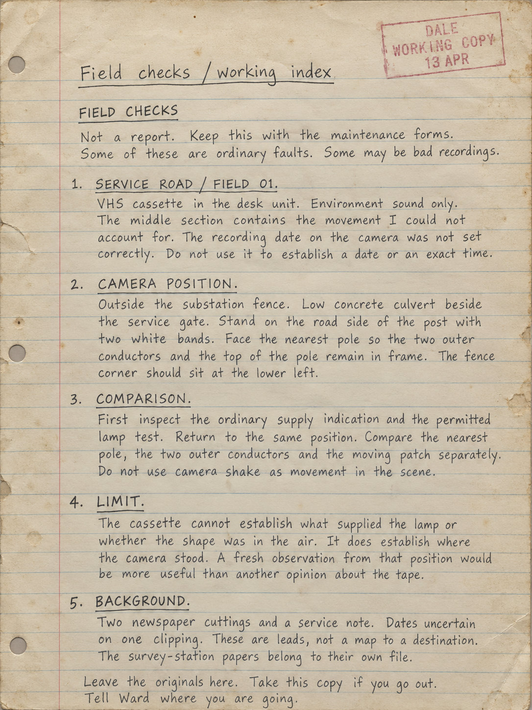
Field checks / working index
Den korte hovedruten fra Dales feltmappe til det faktiske kameraståstedet.
Les dokumentteksten
FIELD CHECKS
Not a report. Keep this with the maintenance forms. Some of these are ordinary faults. Some may be bad recordings.
1. SERVICE ROAD / FIELD 01. VHS cassette in the desk unit. Environment sound only. The middle section contains the movement I could not account for. The recording date on the camera was not set correctly. Do not use it to establish a date or an exact time.
2. CAMERA POSITION. Outside the substation fence. Low concrete culvert beside the service gate. Stand on the road side of the post with two white bands. Face the nearest pole so the two outer conductors and the top of the pole remain in frame. The fence corner should sit at the lower left.
3. COMPARISON. First inspect the ordinary supply indication and the permitted lamp test. Return to the same position. Compare the nearest pole, the two outer conductors and the moving patch separately. Do not use camera shake as movement in the scene.
4. LIMIT. The cassette cannot establish what supplied the lamp or whether the shape was in the air. It does establish where the camera stood. A fresh observation from that position would be more useful than another opinion about the tape.
5. BACKGROUND. Two newspaper cuttings and a service note. Dates uncertain on one clipping. These are leads, not a map to a destination. The survey-station papers belong to their own file.
Leave the originals here. Take this copy if you go out. Tell Ward where you are going.
06Skift og feltarbeid
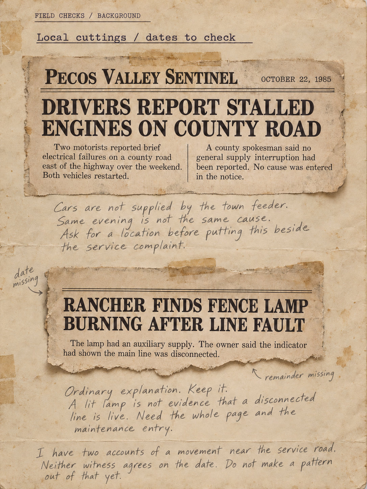
Local cuttings / dates to check
To fiktive lokale avisutklipp med Dales kritiske blyantmerknader i privatmappen.
Les dokumentteksten
CUTTING A
PECOS VALLEY SENTINEL / OCTOBER 22, 1985
DRIVERS REPORT STALLED ENGINES ON 31 dokumenter · 31 bilder klareY ROAD
Two motorists reported brief electrical failures on a county road east of the highway over the weekend. Both vehicles restarted. A county spokesman said no general supply interruption had been reported. No cause was entered in the notice.
Dale, pencil: Cars are not supplied by the town feeder. Same evening is not the same cause. Ask for a location before putting this beside the service complaint.
CUTTING B
HEADLINE SAVED; DATE MISSING
RANCHER FINDS FENCE LAMP BURNING AFTER LINE FAULT
The lamp had an auxiliary supply. The owner said the indicator had shown the main line was disconnected. The remainder of the item is missing.
Dale, pencil: Ordinary explanation. Keep it. A lit lamp is not evidence that a disconnected line is live. Need the whole page and the maintenance entry.
In the empty space below: I have two accounts of a movement near the service road. Neither witness agrees on the date. Do not make a pattern out of that yet.
07Skift og feltarbeid
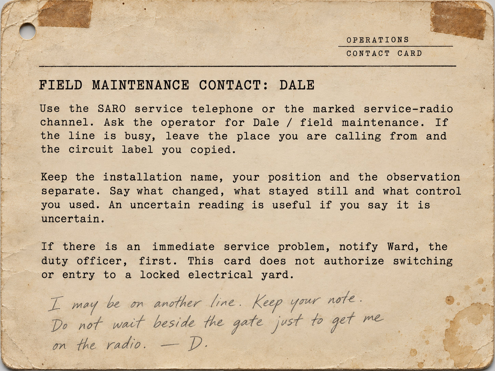
Field contact / keep with the radio
Fysisk kontaktkort under kontortelefonen, mulig å ta med.
Les dokumentteksten
FIELD MAINTENANCE CONTACT: DALE
Use the SARO service telephone or the marked service-radio channel. Ask the operator for Dale / field maintenance. If the line is busy, leave the place you are calling from and the circuit label you copied.
Keep the installation name, your position and the observation separate. Say what changed, what stayed still and what control you used. An uncertain reading is useful if you say it is uncertain.
If there is an immediate service problem, notify Ward, the duty officer, first. This card does not authorize switching or entry to a locked electrical yard.
Handwritten addition: I may be on another line. Keep your note. Do not wait beside the gate just to get me on the radio. — D.
08Skift og feltarbeid
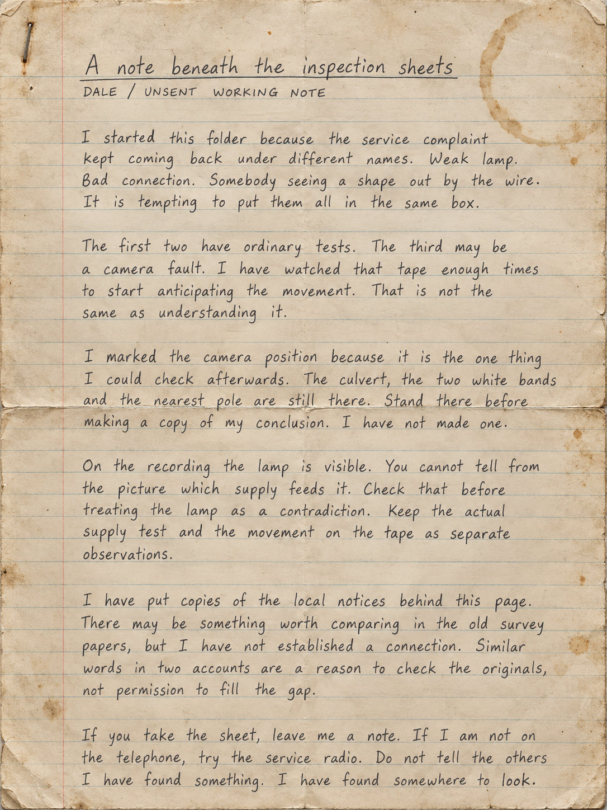
A note beneath the inspection sheets
Privat forklaring under inspeksjonsarkene, frivillig fordypning.
Les dokumentteksten
I started this folder because the service complaint kept coming back under different names. Weak lamp. Bad connection. Somebody seeing a shape out by the wire. It is tempting to put them all in the same box.
The first two have ordinary tests. The third may be a camera fault. I have watched that tape enough times to start anticipating the movement. That is not the same as understanding it.
I marked the camera position because it is the one thing I could check afterwards. The culvert, the two white bands and the nearest pole are still there. Stand there before making a copy of my conclusion. I have not made one.
On the recording the lamp is visible. You cannot tell from the picture which supply feeds it. Check that before treating the lamp as a contradiction. Keep the actual supply test and the movement on the tape as separate observations.
I have put copies of the local notices behind this page. There may be something worth comparing in the old survey papers, but I have not established a connection. Similar words in two accounts are a reason to check the originals, not permission to fill the gap.
If you take the sheet, leave me a note. If I am not on the telephone, try the service radio. Do not tell the others I have found something. I have found somewhere to look.
09Dales private samling
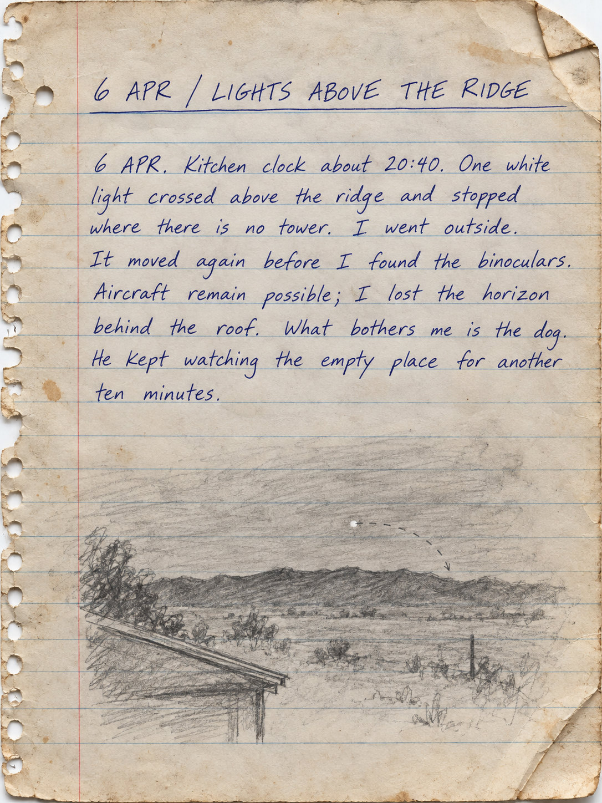
Lights above the ridge / 6 April
håndskrevet ark med en enkel horisontskisse i privatmappen. Den planlagte skissen er et minne fra et vitne, ikke målt flygeometri. Gir gjenkjennelse til kveldens tidlige lys.
Les dokumentteksten
6 APR. Kitchen clock about 20:40. One white light crossed above the ridge and stopped where there is no tower. I went outside. It moved again before I found the binoculars. Aircraft remain possible; I lost the horizon behind the roof. What bothers me is the dog. He kept watching the empty place for another ten minutes.
10Dales private samling
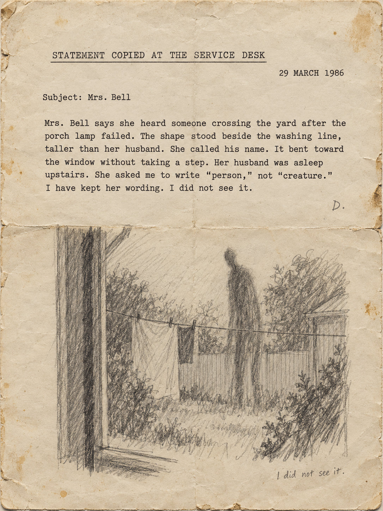
Statement copied at the service desk / 29 March
avskrift med dato og Dales initialer, ikke et offisielt politibevis. Gir direkte, ubehagelig humanoidstoff uten å erklære art eller identitet.
Les dokumentteksten
Mrs. Bell says she heard someone crossing the yard after the porch lamp failed. The shape stood beside the washing line, taller than her husband. She called his name. It bent toward the window without taking a step. Her husband was asleep upstairs. She asked me to write “person,” not “creature.” I have kept her wording. I did not see it.
11Dales private samling
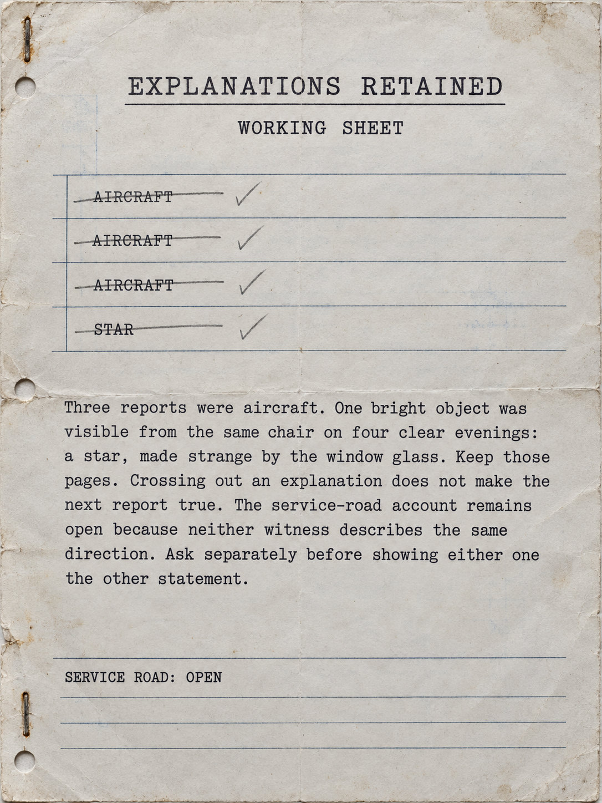
Explanations retained / working sheet
flere kryssede saker foran de åpne. Gjør Dale troverdig og lar normale forklaringer fortsatt være sanne uten å bortforklare spillerens faktiske møter.
Les dokumentteksten
Three reports were aircraft. One bright object was visible from the same chair on four clear evenings: a star, made strange by the window glass. Keep those pages. Crossing out an explanation does not make the next report true. The service-road account remains open because neither witness describes the same direction. Ask separately before showing either one the other statement.
12Dales private samling
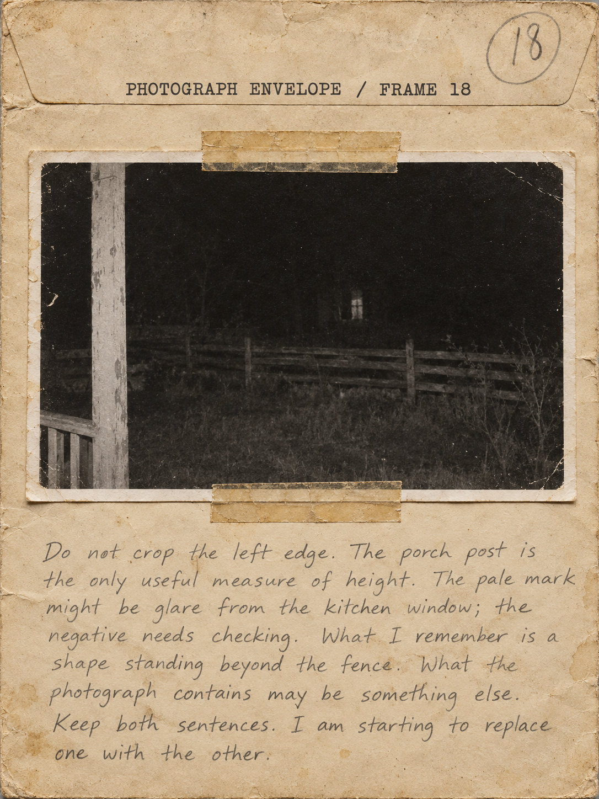
Photograph envelope / frame 18
konvolutt med et planlagt dårlig eksponert fotografi/negativ. Fotoet må faktisk lages og granskes; ikke tildel et bildebevis som bare finnes i tekst. Vanlig sammenligningspunkt skal være synlig hvis fotoet brukes.
Les dokumentteksten
Do not crop the left edge. The porch post is the only useful measure of height. The pale mark might be glare from the kitchen window; the negative needs checking. What I remember is a shape standing beyond the fence. What the photograph contains may be something else. Keep both sentences. I am starting to replace one with the other.
13Dales private samling
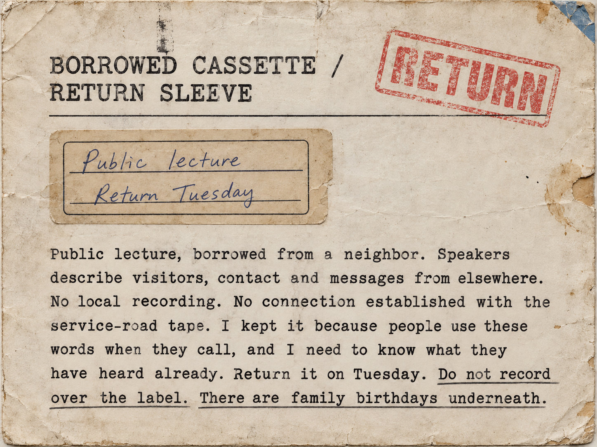
Borrowed cassette / return sleeve
lånt offentlig kontaktforelesning, tydelig atskilt fra hans felt-VHS. Gir 1986-miljø og viser hvordan ord kan spre seg mellom vitner uten å skape uavhengige bevis.
Les dokumentteksten
Public lecture, borrowed from a neighbor. Speakers describe visitors, contact and messages from elsewhere. No local recording. No connection established with the service-road tape. I kept it because people use these words when they call, and I need to know what they have heard already. Return it on Tuesday. Do not record over the label. There are family birthdays underneath.
14Dales private samling
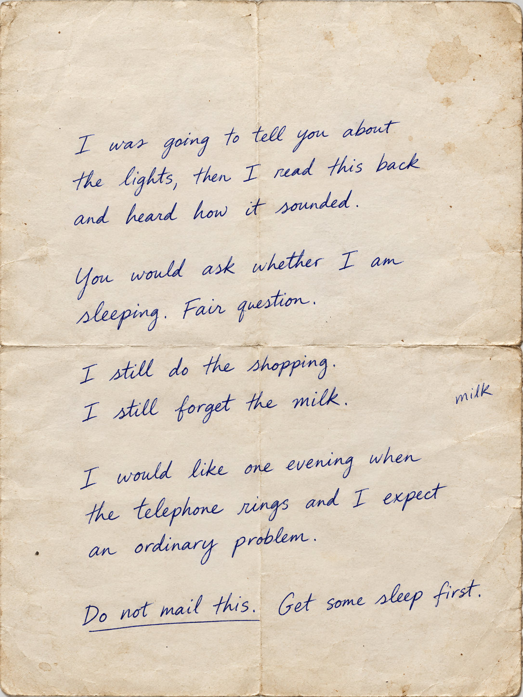
Unsent letter / no address
under vanlige arbeidsark, ikke låst som en nødvendig hemmelighet. Dale blir en person med søvn, handleliste og skam over hvordan opplevelsene høres ut.
Les dokumentteksten
I was going to tell you about the lights, then I read this back and heard how it sounded. You would ask whether I am sleeping. Fair question. I still do the shopping. I still forget the milk. I would like one evening when the telephone rings and I expect an ordinary problem. Do not mail this. Get some sleep first.
15Gamle aviser
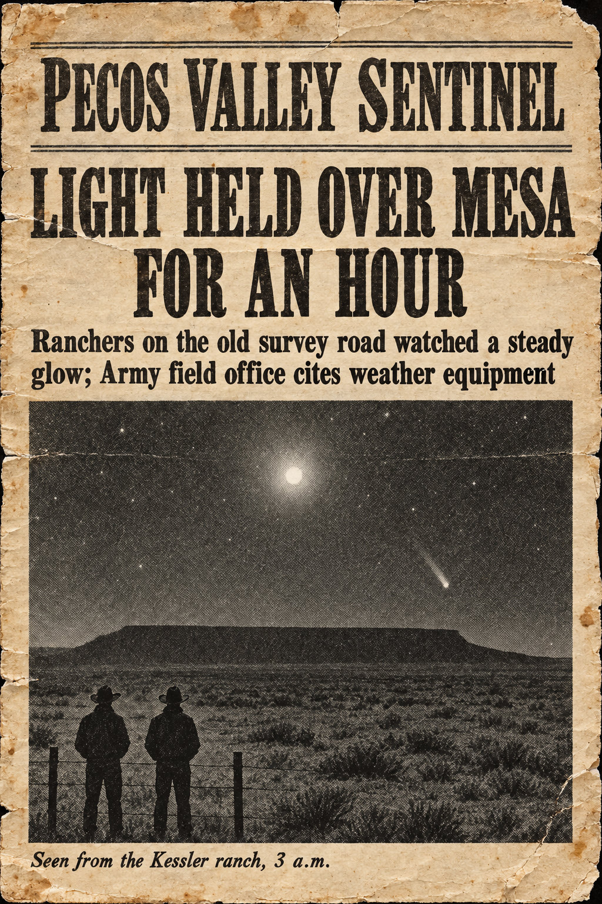
E15 / The Sentinel clipping
Gammelt fiktivt avisutklipp fra dinerens vegg, bevart som senere hovedrutebevis.
Les dokumentteksten
PECOS VALLEY SENTINEL
LIGHT HELD OVER MESA
FOR AN HOUR
Ranchers on the old survey road watched a steady
glow; Army field office cites weather equipment
Seen from the Kessler ranch, 3 a.m.
16Målefeltets arkiv
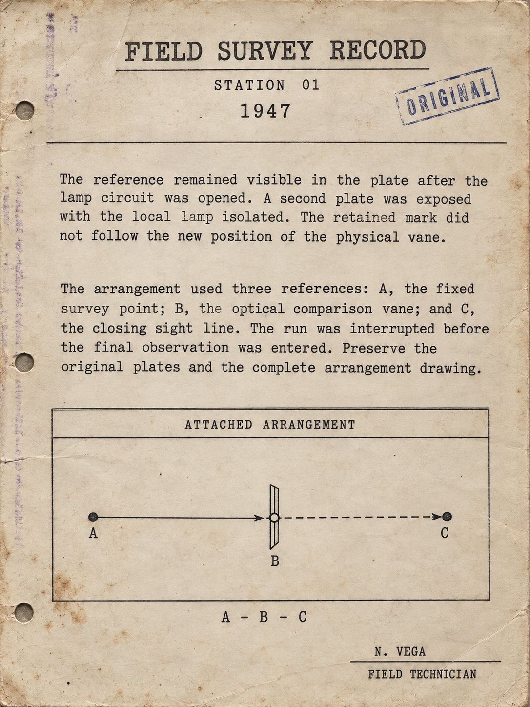
E07 / Field survey record, 1947
Original feltprotokoll med komplett oppstilling, til sammenligning i arkivet.
Les dokumentteksten
FIELD SURVEY RECORD / STATION 01 / 1947
The reference remained visible in the plate after the lamp circuit was opened. A second plate was exposed with the local lamp isolated. The retained mark did not follow the new position of the physical vane.
The arrangement used three references: A, the fixed survey point; B, the optical comparison vane; and C, the closing sight line. The run was interrupted before the final observation was entered. Preserve the original plates and the complete arrangement drawing.
N. VEGA / FIELD TECHNICIAN
17Målefeltets arkiv
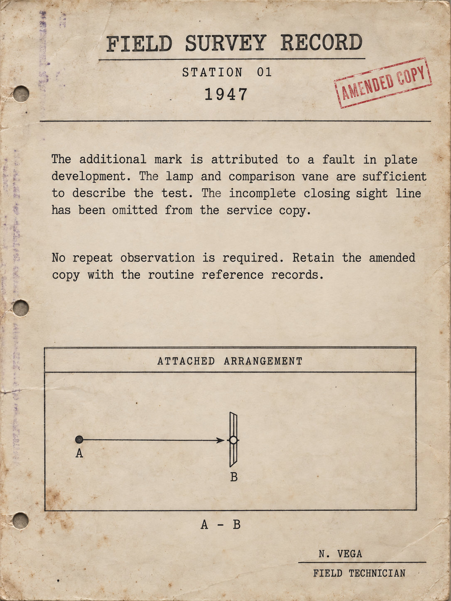
E06 / Amended service copy, 1947
Revidert servicekopi som viser den konkrete forskjellen fra originalen.
Les dokumentteksten
FIELD SURVEY RECORD / STATION 01 / 1947
AMENDED COPY
The additional mark is attributed to a fault in plate development. The lamp and comparison vane are sufficient to describe the test. The incomplete closing sight line has been omitted from the service copy.
No repeat observation is required. Retain the amended copy with the routine reference records.
N. VEGA / FIELD TECHNICIAN
18Målefeltets arkiv
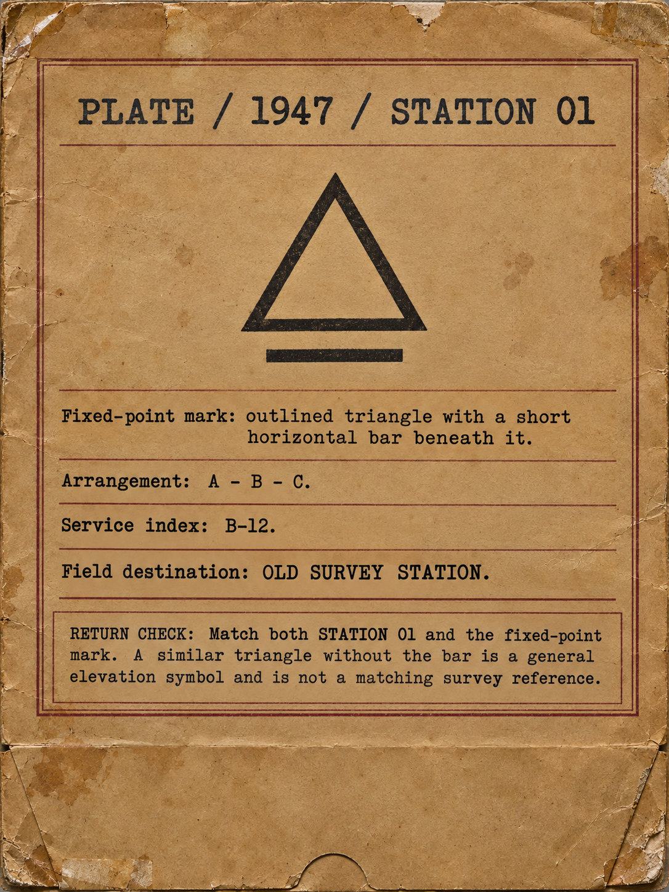
E08 / Archive sleeve index
Gulnet arkivhylster med registerkort og korrekt fastpunktsmerke.
Les dokumentteksten
PLATE / 1947 / STATION 01
Fixed-point mark: outlined triangle with a short horizontal bar beneath it.
Arrangement: A - B - C.
Service index: B-12.
Field destination: OLD SURVEY STATION.
RETURN CHECK: Match both STATION 01 and the fixed-point mark. A similar triangle without the bar is a general elevation symbol and is not a matching survey reference.
19Målefeltets arkiv
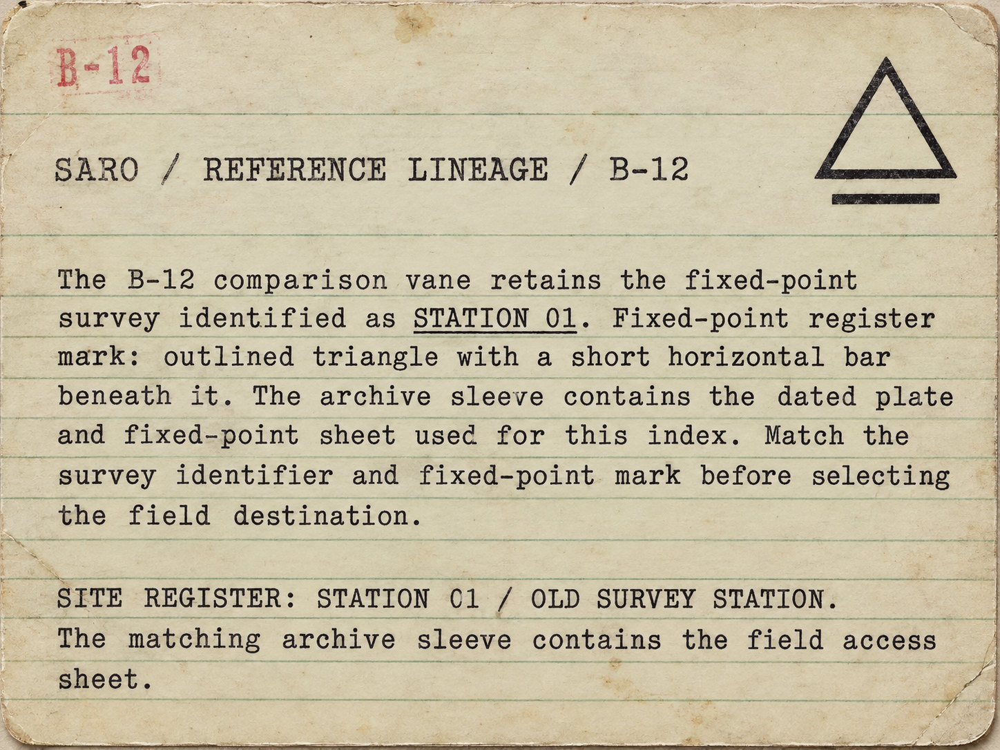
B-12 / Reference lineage card
Kartotekkort som kobler dagens B-12 til det gamle målefeltet.
Les dokumentteksten
SARO / REFERENCE LINEAGE / B-12
The B-12 comparison vane retains the fixed-point survey identified as STATION 01. Fixed-point register mark: outlined triangle with a short horizontal bar beneath it. The archive sleeve contains the dated plate and fixed-point sheet used for this index. Match the survey identifier and fixed-point mark before selecting the field destination.
SITE REGISTER: STATION 01 / OLD SURVEY STATION. The matching archive sleeve contains the field access sheet.
20Målefeltets arkiv
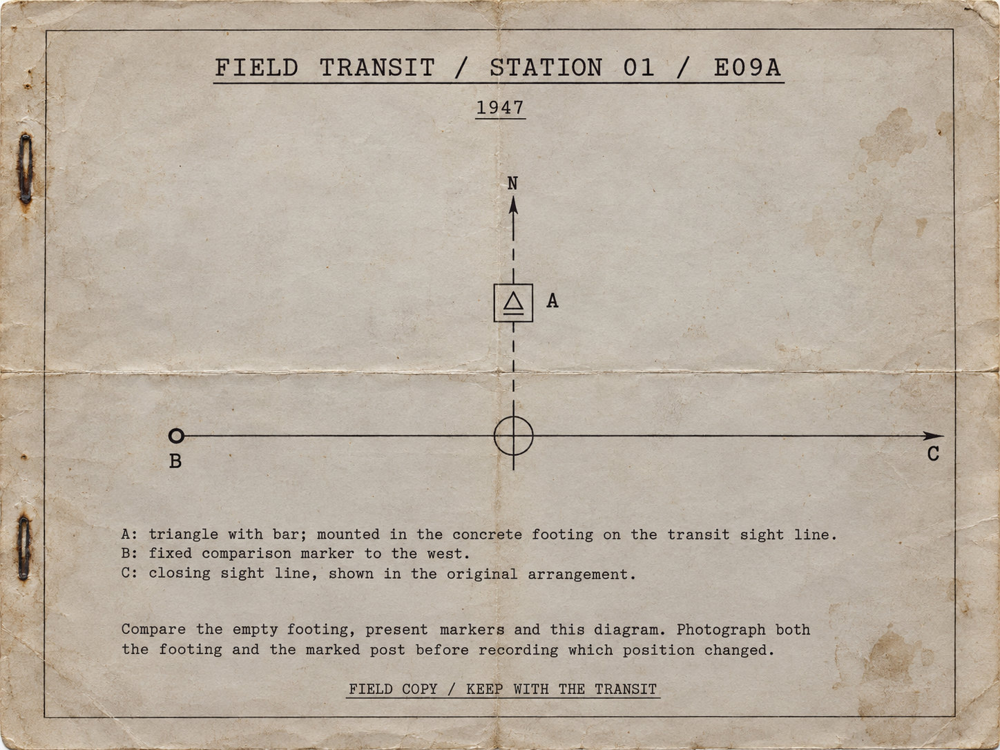
E09A / Field transit record
Felttransitark fra stålrammen ved målepilaren på STATION 01.
Les dokumentteksten
FIELD TRANSIT / STATION 01 / E09A
1947 / A: triangle with bar; mounted in the concrete footing on the transit sight line. B: fixed comparison marker to the west. C: closing sight line, shown in the original arrangement.
Compare the empty footing, present markers and this diagram. Photograph both the footing and the marked post before recording which position changed.
21Målefeltets arkiv
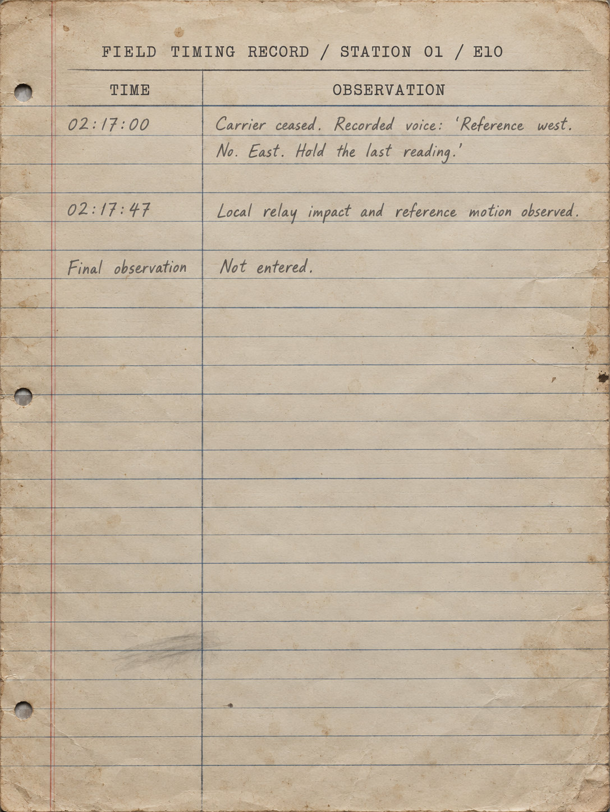
E10 / Field timing record, 1947
Blyantført gammel tidsprotokoll på hyttebenken, uten senere dynamisk spillerobservasjon.
Les dokumentteksten
FIELD TIMING RECORD / STATION 01 / E10
02:17:00 / Carrier ceased. Recorded voice: ‘Reference west. No. East. Hold the last reading.’
02:17:47 / Local relay impact and reference motion observed.
Final observation / Not entered.
22SAROs tekniske arkiv
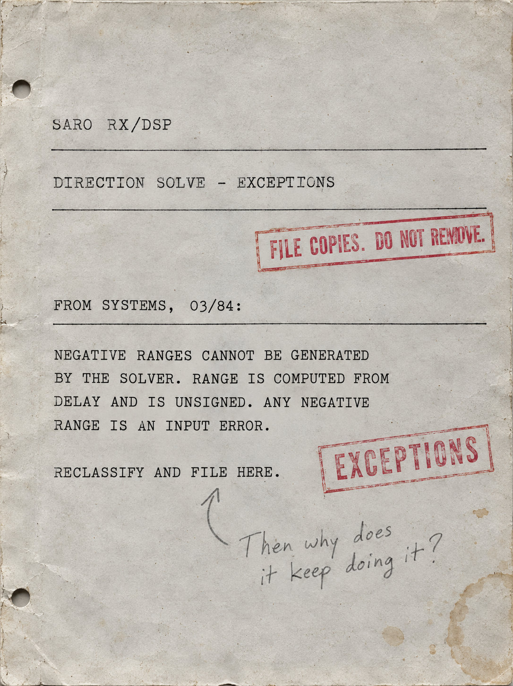
Direction solve / exceptions / Systems note
Maskinskrevet systemnotat med kritisk blyantmerknad, først i avvikspermen.
Les dokumentteksten
SARO RX/DSP
DIRECTION SOLVE - EXCEPTIONS
FILE COPIES. DO NOT REMOVE.
FROM SYSTEMS, 03/84:
NEGATIVE RANGES CANNOT BE GENERATED
BY THE SOLVER. RANGE IS COMPUTED FROM
DELAY AND IS UNSIGNED. ANY NEGATIVE
RANGE IS AN INPUT ERROR.
RECLASSIFY AND FILE HERE.
~ Then why does it keep doing it?
23SAROs tekniske arkiv
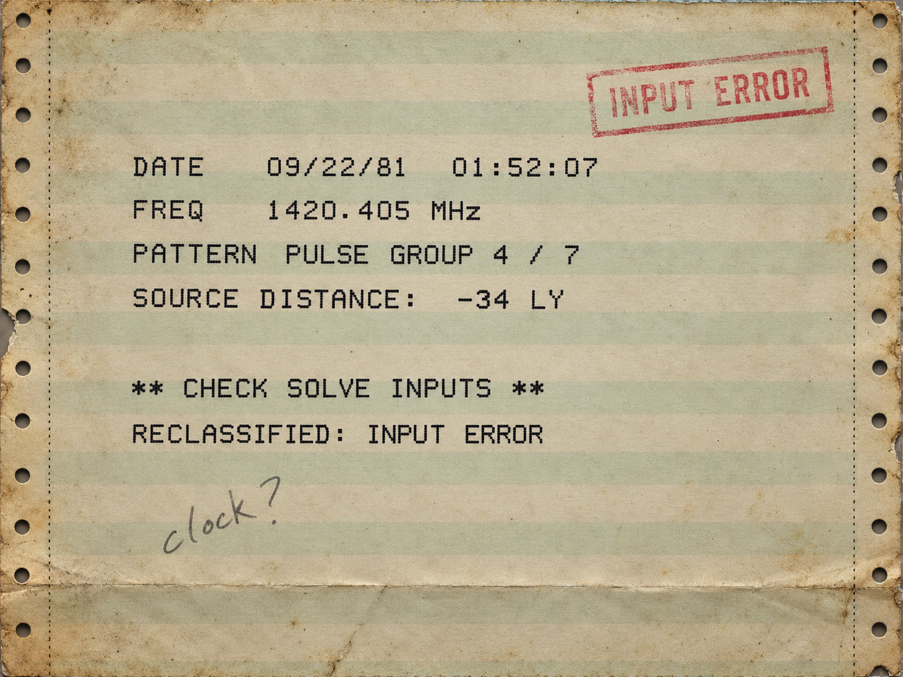
Direction solve / September 22, 1981
Første eldre maskinutskrift, stemplet som inndatafeil.
Les dokumentteksten
DATE 09/22/81 01:52:07
FREQ 1420.405 MHz
PATTERN PULSE GROUP 4 / 7
SOURCE DISTANCE: -34 LY
** CHECK SOLVE INPUTS **
RECLASSIFIED: INPUT ERROR
~ clock?
24SAROs tekniske arkiv
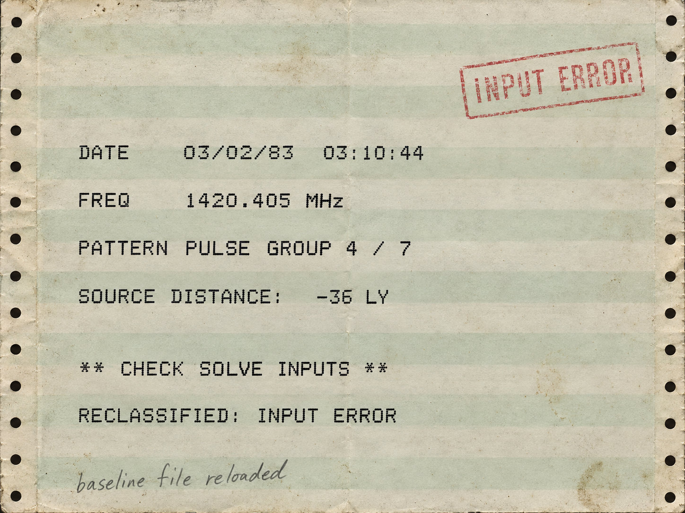
Direction solve / March 2, 1983
Andre eldre maskinutskrift med Dales noterte kontrollforsøk.
Les dokumentteksten
DATE 03/02/83 03:10:44
FREQ 1420.405 MHz
PATTERN PULSE GROUP 4 / 7
SOURCE DISTANCE: -36 LY
** CHECK SOLVE INPUTS **
RECLASSIFIED: INPUT ERROR
~ baseline file reloaded
25SAROs tekniske arkiv
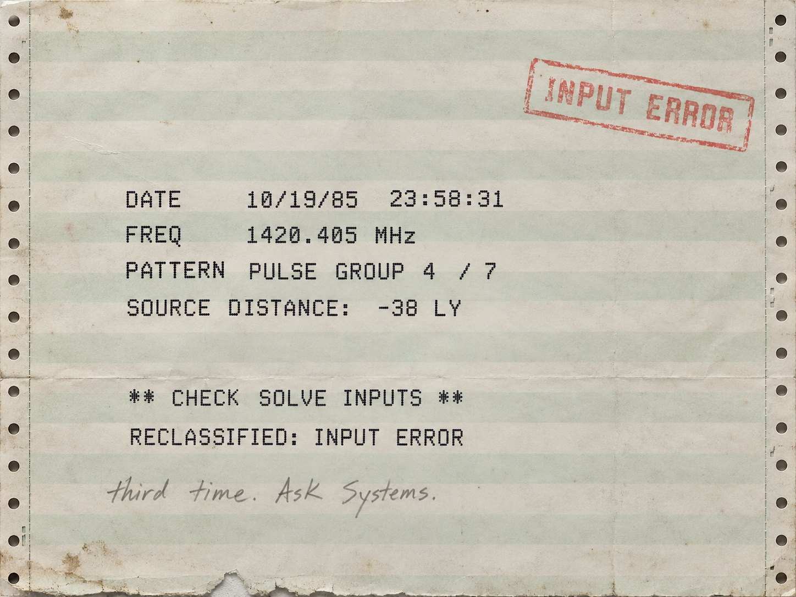
Direction solve / October 19, 1985
Tredje eldre maskinutskrift, med samme oppsett som de andre.
Les dokumentteksten
DATE 10/19/85 23:58:31
FREQ 1420.405 MHz
PATTERN PULSE GROUP 4 / 7
SOURCE DISTANCE: -38 LY
** CHECK SOLVE INPUTS **
RECLASSIFIED: INPUT ERROR
~ third time. Ask Systems.
26SAROs tekniske arkiv
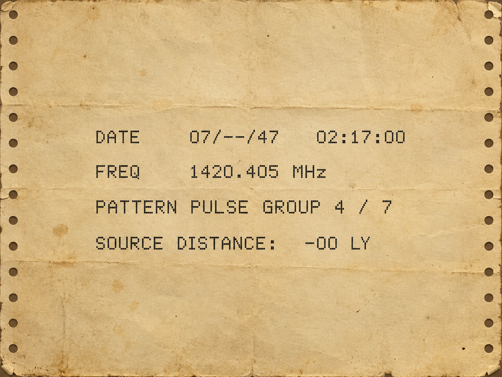
Direction solve / July 1947 / undated day
Permens siste, eldste ark med den bevisste tidsmessige motsigelsen.
Les dokumentteksten
DATE 07/--/47 02:17:00
FREQ 1420.405 MHz
PATTERN PULSE GROUP 4 / 7
SOURCE DISTANCE: -00 LY
27SAROs tekniske arkiv
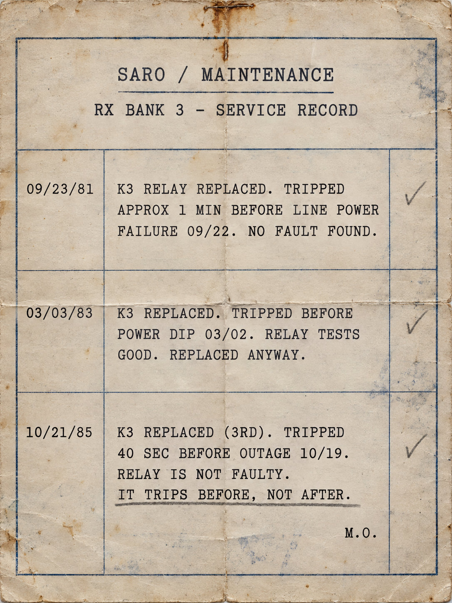
RX bank 3 / Service record
Vedlikeholdsklipsark fra SAROs rack, til senere mønstersammenligning.
Les dokumentteksten
SARO / MAINTENANCE
RX BANK 3 - SERVICE RECORD
09/23/81 K3 RELAY REPLACED. TRIPPED
APPROX 1 MIN BEFORE LINE POWER
FAILURE 09/22. NO FAULT FOUND.
03/03/83 K3 REPLACED. TRIPPED BEFORE
POWER DIP 03/02. RELAY TESTS
GOOD. REPLACED ANYWAY.
10/21/85 K3 REPLACED (3RD). TRIPPED
40 SEC BEFORE OUTAGE 10/19.
RELAY IS NOT FAULTY.
IT TRIPS BEFORE, NOT AFTER.
M.O.28Frivillige bakgrunnsrekvisitter
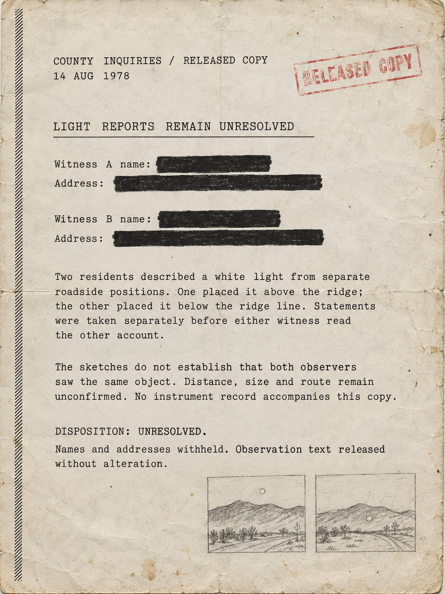
Light reports remain unresolved
Frivillig eldre saksark med troverdig personsladding, til mulig senere arkiv- eller miljøbruk.
Les dokumentteksten
31 dokumenter · 31 bilder klareY INQUIRIES / RELEASED COPY
14 AUG 1978
LIGHT REPORTS REMAIN UNRESOLVED
Witness A name: [REDACTED]
Address: [REDACTED]
Witness B name: [REDACTED]
Address: [REDACTED]
Two residents described a white light from separate roadside positions. One placed it above the ridge; the other placed it below the ridge line. Statements were taken separately before either witness read the other account.
The sketches do not establish that both observers saw the same object. Distance, size and route remain unconfirmed. No instrument record accompanies this copy.
DISPOSITION: UNRESOLVED.
Names and addresses withheld. Observation text released without alteration.
29Frivillige bakgrunnsrekvisitter
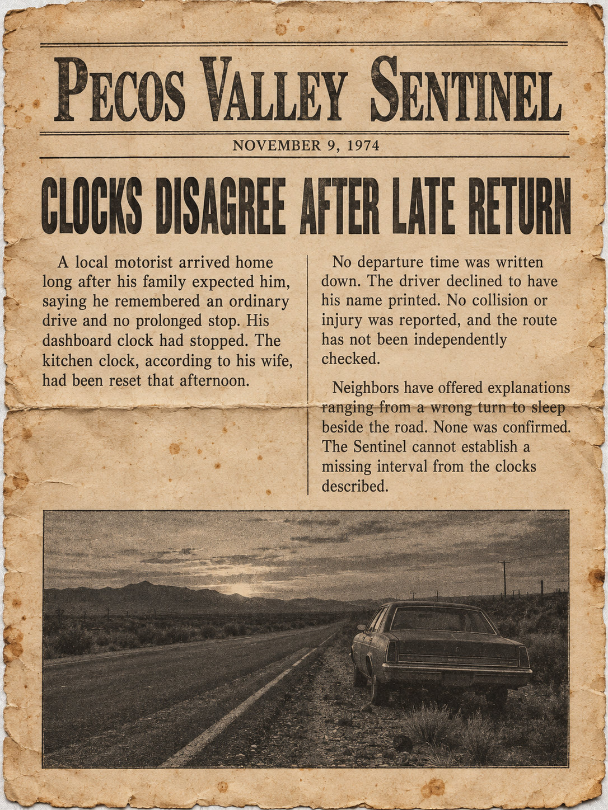
Clocks disagree after late return
Gammelt frivillig avisutklipp om tapt tidsfølelse, med motstridende klokker og åpent hendelsesforløp.
Les dokumentteksten
PECOS VALLEY SENTINEL
NOVEMBER 9, 1974
CLOCKS DISAGREE AFTER LATE RETURN
A local motorist arrived home long after his family expected him, saying he remembered an ordinary drive and no prolonged stop. His dashboard clock had stopped. The kitchen clock, according to his wife, had been reset that afternoon.
No departure time was written down. The driver declined to have his name printed. No collision or injury was reported, and the route has not been independently checked.
Neighbors have offered explanations ranging from a wrong turn to sleep beside the road. None was confirmed. The Sentinel cannot establish a missing interval from the clocks described.
30Frivillige bakgrunnsrekvisitter
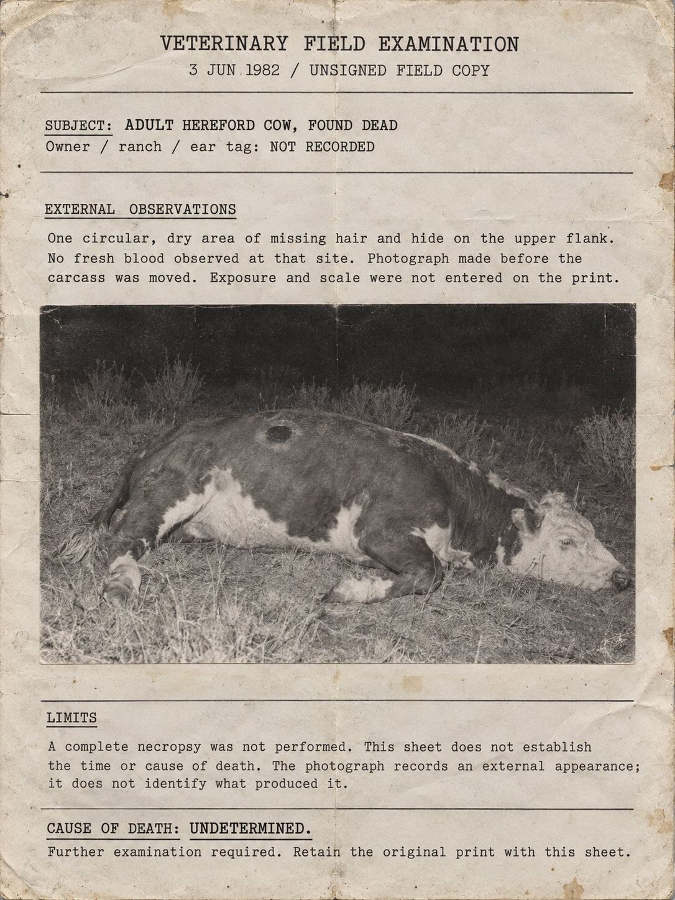
Field examination / cause undetermined
Frivillig eldre veterinærark med et nøkternt feltfotografi, til senere miljø- eller arkivbruk.
Les dokumentteksten
VETERINARY FIELD EXAMINATION
3 JUN 1982 / UNSIGNED FIELD COPY
SUBJECT: ADULT HEREFORD COW, FOUND DEAD
Owner / ranch / ear tag: NOT RECORDED
EXTERNAL OBSERVATIONS
One circular, dry area of missing hair and hide on the upper flank. No fresh blood observed at that site. Photograph made before the carcass was moved. Exposure and scale were not entered on the print.
LIMITS
A complete necropsy was not performed. This sheet does not establish the time or cause of death. The photograph records an external appearance; it does not identify what produced it.
CAUSE OF DEATH: UNDETERMINED.
Further examination required. Retain the original print with this sheet.
31Frivillige bakgrunnsrekvisitter
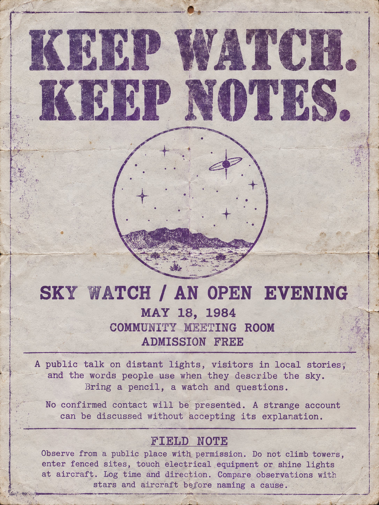
Keep watch. Keep notes.
Frivillig sjablongkopiert foredragsplakat som gir folkelig UFO-miljø før spillnatten.
Les dokumentteksten
KEEP WATCH. KEEP NOTES.
SKY WATCH / AN OPEN EVENING
MAY 18, 1984
COMMUNITY MEETING ROOM
ADMISSION FREE
A public talk on distant lights, visitors in local stories, and the words people use when they describe the sky. Bring a pencil, a watch and questions.
No confirmed contact will be presented. A strange account can be discussed without accepting its explanation.
FIELD NOTE
Observe from a public place with permission. Do not climb towers, enter fenced sites, touch electrical equipment or shine lights at aircraft. Log time and direction. Compare observations with stars and aircraft before naming a cause.